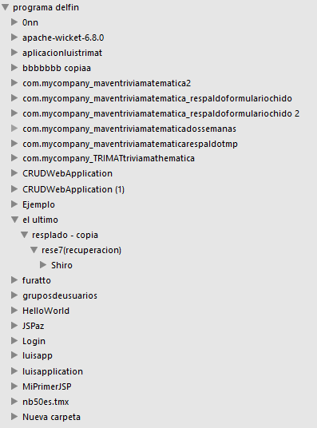
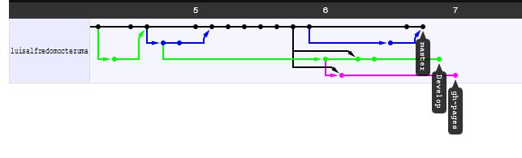

Lema: "El que no conoce su historia esta condenado a repetirla"
La historia de tu código
Control de versiones
- Subversion
- SourceSafe
- Mercurial
- Perforce
- Git
Controlar Versiones
Esto NO es Controlar tus versiones

Controlar Versiones
Esto ES controlar tus versiones


Es un sistema de control de versiones diseñado para manejar proyectos muy grandes con velocidad y eficiencia, pero igual de apropiado para repositorios pequeños; es especialmente popular con la comunidad open source.
CEO
Git es un proyecto Open Source cubierto por la GNU General Public License v2. Originalmente escrito por Linus Torvalds y mantenido por Junio C Hamano.

Social Coding
Github
Red Social para developers
Bitbucket
Repo privados: GRATUITOS
¿Por que github?

"En la vida solo puedes hacer algunas cosas,
hagamos lo que nos apasiona"
Cristian Jaramillo Méndez - Investigador en internet